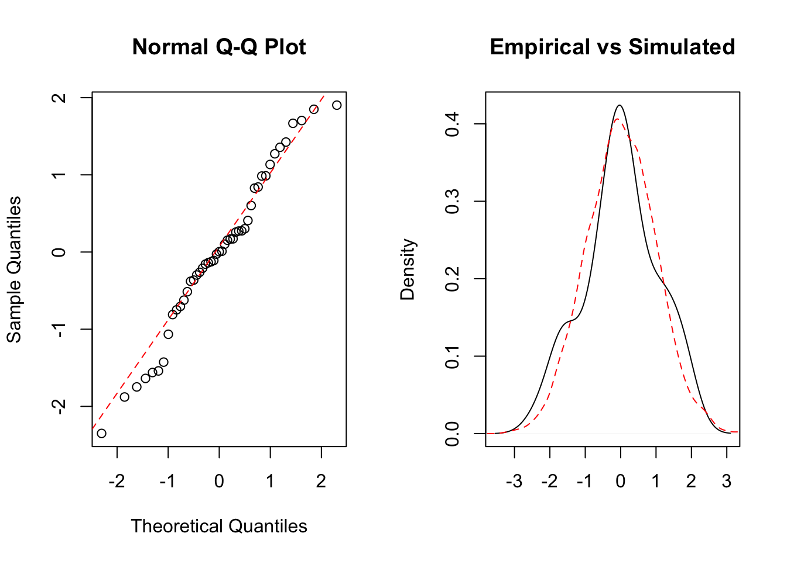

## The following objects are masked from teengamb (pos = 11):
##
## gamble, income, sex, status, verbalWhen proforming standard regression analysis certain assumptions about the stucture and distribution of the data at hand are made. The inferences made from the model are only valid if the assumptions are true. Thus we employ diagnostic methedologies to evaluate whether assumptions are not grossly violated, and that infrences may be made.
Our model loks at how teenage gambling relates to covariates such as income, social status, gender, and preformance on the verbal score. We begin by using a siple multivariate linear regression:
model <- lm(gamble ~ sex + status + income + verbal)
model##
## Call:
## lm(formula = gamble ~ sex + status + income + verbal)
##
## Coefficients:
## (Intercept) sex status income verbal
## 22.55565 -22.11833 0.05223 4.96198 -2.95949We then proceed to check the following assumptions: Constant Variance Normality *Independent Residuals (This analysis is left for later)
plot(model$residuals ~ model$fitted.values, xlab = "Fitted Values", ylab = "Residuals", main = "Risiduals vs Fitted Values")The plot above raises the suspicion on non-constant variance. We see how residuals first decrease and then increase in what appears to be a systematic fashion. To remedy this we propose a different model with a transformation applied to the responce, amount gambled.
model2 <- lm(log(gamble+1) ~ sex + status + income + verbal)
model2##
## Call:
## lm(formula = log(gamble + 1) ~ sex + status + income + verbal)
##
## Coefficients:
## (Intercept) sex status income verbal
## 1.71620 -0.87120 0.02983 0.21565 -0.26165Now we can see that the residuals seem to fluctuate around zero with no strong pattern, equal deviations across the fitted values. The plot is not perfect but good enough to make a judgment in favor of constant variance.
plot(model2$residuals ~ model2$fitted.values, xlab = "Fitted Values", ylab = "Residuals", main = "Risiduals vs Fitted Values")To check normality we construct a qqplot, coparing the empirical quantiles of the residuals to the standard normal quantiles. As seen from the plot, the empirical quantiles seem to follow the normal quantiles relativly closely, and with no string deviations at the tails. Thus it appears that normality is not stringly violated.
par(mfrow = c(1,2))
qqnorm(model2$residuals)
qqline(model2$residuals, col=2, lty = 2)
plot(density(model2$residuals), main = "Empirical vs Simulated", xlab = "")
lines(density(rnorm(10000)), col=2, lty=2)
After checking some of the important assumptions we want to check for unusual observations that could be either heavily influencing the model fit, or our inferences. We want to check for: Leverage Points Outliers
Evaluation of leverage allows to see which data poins are driving the model fit. These points are ones that are far removed from the main mass of the data.
plot(sort(lm.influence(model2)$hat), main = "Leverage with cutoff", ylab = "Sorted Hat Diagonal")
abline(h = 2*(dim(teengamb)[2]+1)/dim(teengamb)[1], col = 2, lty = 2)teengamb[(lm.influence(model2)$hat) > 2*(dim(teengamb)[2]+1)/dim(teengamb)[1],]## sex status income verbal gamble
## 35 0 28 1.5 1 14.1
## 42 0 61 15.0 9 69.7These are the two points with what would be considered high leverage.
In contrast, outliers are points that heavily infuelnce the “goodness of fit”, and hence the infirences drawn about the parameters. The “Jacknife” residuals measures how much the fitted values change having removed one of the data points at a time. These residuals are tested against a distribution to derive the likelihood of observing a change in fitted values. Because we preform multiple tests simultaniously we use the Bonferroni adjusted error rate. If the test is significant, the data suggests the point is an outlier. Based on the test we don’t identify any outliers.
pvalues <- (1-pt(abs(rstudent(model2)), df = dim(teengamb)[1] - dim(teengamb)[2] - 1))*2
plot(pvalues, ylim = c(0,0.20), ylab = "p-value", main = "Testing Outliers, Bonferroni Adjustment")
abline(h = 0.05/47, col = 2, lty = 2)Now we use our model to predict the amount gambled, on the log scale, for a range of different levels of income. On the preiction plot you can also see the confidence and prediction bounds. The pink points are the points with large leverage. The yellow points are onse that are most likley to be outliers.
pred <- predict( model2, data.frame(sex = 0, status = 43, income = 0:20, verbal =7), interval = c("prediction"))
conf <- predict( model2, data.frame(sex = 0, status = 43, income = 0:20, verbal =7), interval = c("confidence"))
plot(income,log(gamble + 1), xlim = c(-1,20), ylim = c(-1,8), ylab = "LOG Amount Gambled", xlab = "Income", main = "Predicting Amount Gambled using Income")
rug(income, col=2)
lines(pred[,"fit"], col=2)
lines(pred[,"lwr"], lty=2, col=3)
lines(pred[,"upr"], lty=2, col=3)
lines(conf[,"lwr"], lty=3, col=4)
lines(conf[,"upr"], lty=3, col=4)
points(income,log(gamble + 1), col = ifelse(gamble == 69.7| gamble == 14.1, 6,1), pch = ifelse(gamble == 69.7 | gamble == 14.1, 20,1))
points(income,log(gamble + 1), col = ifelse(gamble == 0.1| gamble == 19.6 | gamble == 6.0| gamble == 70, 7,1), pch = ifelse(gamble == 0.1| gamble == 19.6 | gamble == 6.0| gamble == 70, 20,1))